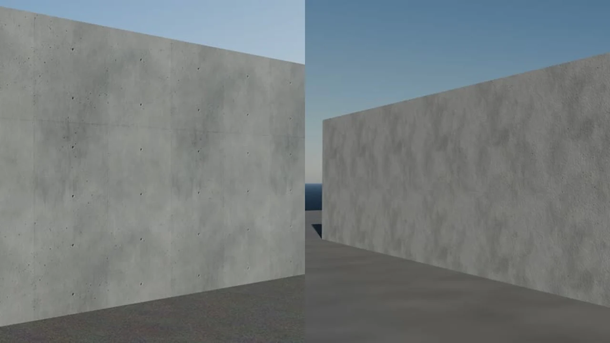

Give your coding agent a 3D studio: a hands-on guide to Blender Agent Skills
Coding agents write code well, but ask one for a 3D model and it guesses Blender's API from memory — wrong operators, materials that fall apart on export, meshes with problems nobody notices until the game engine complains. Blender Agent Skills puts the professional workflow in the agent's notes instead: 22 tested skills for Blender 5.2, from modeling to export and QA.
- What: Blender Agent Skills — 22 skills covering the full 3D pipeline: modeling, UVs, PBR materials, baking, rigging, animation, optimization, export, rendering, time of day, weather, simulation and QA.
- Project: EL4CTEO/blender-skills, MIT license, created 2026-10-14 — 496 stars and 44 forks (verified 2026-10-25).
- Install: a Claude Code plugin, or clone the repo and run the installer — it drops the skills into
~/.claude/skillsand~/.agents/skills, with--agent,--projectand--uninstalloptions. - Requirements: Blender 5.2 LTS or newer. A Blender MCP server is optional — without one, agents run Blender in the background.
- Tested: every script is tested in a real Blender, and the repo ships 50 headless Blender tests plus a skill validator that checks specs and token budgets.
- Exports: Roblox, Unity, Unreal, Godot, web and USD, from the export-pipelines skill.
Ask a coding agent for a 3D model and you get its best guess at Blender's API from memory: operators that moved in Blender 5, materials that look right in the viewport and fall apart on export, meshes with problems nobody notices until the game engine complains. The model is not lazy — it is working without the workflow. Blender's own documentation is huge, and none of it is in the agent's working notes.
Blender Agent Skills puts the workflow in the agent's notes. It is a pack of 22 skills — short, tested procedure guides — covering the whole 3D pipeline, built for Blender 5.2 LTS and newer. Your agent reads the skill for the job at hand instead of improvising: the core skill routes the task and enforces 5.x API rules, then the modeling, materials, baking, rigging, animation, export and QA skills take over their parts. It is EL4CTEO/blender-skills, MIT licensed, created 2026-10-14, with 496 GitHub stars and 44 forks at writing time. Every script in it is tested in a real Blender, which is a stronger claim than most skill packs make.
What you'll need
- Blender 5.2 LTS or newer, installed and able to run
- One supported agent: Claude Code, Codex, OpenCode, Gemini CLI, GitHub Copilot or Cursor
- git, and a folder for the test project
- Nothing new to pay for — the skills add no service and no key; your agent's usual model access is all they need
- Optional: a Blender MCP server, if you want the agent working inside your open Blender window
Give your coding agent a 3D studio
1. Install Blender 5.2 and pick your agent
Download Blender 5.2 LTS or newer from blender.org and confirm it opens. Then decide which agent will do the building: the pack supports Claude Code, Codex, OpenCode, Gemini CLI, GitHub Copilot and Cursor, and the install step below is the only part that differs between them. The version matters — the pack's core skill enforces 5.x API rules, so an older Blender is not the target here.
2. Install the skills
For Claude Code, install from the plugin marketplace:
/plugin marketplace add EL4CTEO/blender-skills
/plugin install blender-agent-skills@blender-agent-skills
For any other agent, clone the repo and run the installer:
git clone https://github.com/EL4CTEO/blender-skills
./blender-skills/install/install.sh # macOS / Linux
.\blender-skills\install\install.ps1 # Windows
The default install drops the skills into ~/.claude/skills and ~/.agents/skills — the second directory is the one Codex, OpenCode, Gemini CLI, Copilot and Cursor read. Check they landed:
ls ~/.agents/skills | grep blender
Two options are worth knowing. --agent claude|codex|opencode|gemini|copilot|cursor|all installs for one agent only, and --project DIR installs into a single project instead of globally — handy for keeping this experiment out of your other work. --uninstall removes them. If you cloned the repo, you can also run its own checks: python tools/validate_skills.py runs spec and token-budget checks on the pack.
3. Build a game-ready crate
Open your agent in an empty project folder and give it the pack's own example prompt, word for word:
Make a game-ready crate for Unreal with baked normals and LODs.
That one sentence touches four skills from the pack's own table: hardsurface modeling for the crate's bevels and booleans, PBR materials for correct textures, texture baking for the normal map, and game optimization for the budgets and LODs. The core skill routes the task and keeps the generated code on 5.x API rules. Let the agent finish, then open the result in Blender and look at it before you trust it — the skills make the agent competent, not infallible, and this is the habit that keeps the rest of the tutorial honest.

4. Run the QA pass
Now use the pack's second example prompt on the crate you just built:
Check this model for z-fighting and floating parts, then export it for Roblox.
The asset-QA skill is the one that earns its keep here: it catches z-fighting, floating parts, bad normals and bad weights — the defects that are invisible in a thumbnail and embarrassing in a game. Treat a clean QA pass as a gate, not a guarantee: it checks the defects on its list, and your eyes still have to approve the shape, the proportions and the materials.
5. Export it everywhere
The export-pipelines skill covers Roblox, Unity, Unreal, Godot, web and USD, so the same crate can go to a second engine without a second modeling session. Try the pack's rigging example next, to see a longer pipeline end to end:
Rig this character with Rigify and export it to Unity with a walk cycle.
That prompt walks through character rigging, animation and export in one run — and it is the fastest way to find out whether your agent's model is strong enough for multi-step 3D work, because a rig that exports cleanly to Unity has survived modeling, skinning, animation and export without a silent break.
6. Make a rainy night street
Finish with the pack's mood example, which shows the other end of the pipeline — not assets, but atmosphere:
Make this street a rainy night with puddles and lightning.
That prompt leans on the weather skill (rain, snow, wet streets, puddles, lightning), the time-of-day skill (golden hour, night, fog and mood lighting) and studio lighting. It is also the best test of whether the pack changed anything for you: a rainy street is easy to describe and hard to light, and the difference between a model that knows the weather skill and one guessing at it shows up in the first render.
What you built
An agent that speaks Blender 5.2 properly: 22 skills installed for your agent, a game-ready crate built with baked normals and LODs, a QA pass that checked it for z-fighting and floating parts, exports aimed at more than one engine, and a rainy night street that proves the mood skills work too. The next time you need a 3D asset, the workflow is already in the agent's notes — you describe the thing, and the pack supplies the procedure.
Honest limitations
- Blender 5.2 or newer is required. The core skill enforces 5.x API rules; if your pipeline is pinned to an older Blender, this pack is not aimed at you.
- Without a Blender MCP server, the agent works blind. It runs Blender in the background and you review files, not a live viewport. The MCP route lets it work in your open Blender — but that is an extra server to set up, and this tutorial's steps all work without it.
- Skills guide the model; they do not guarantee the model. The QA skill catches the defects on its list — z-fighting, floating parts, bad normals and weights — not bad taste, wrong proportions or a crate that simply looks wrong. Open the result every time.
- Results depend on your agent's model. The same prompt through a weaker model produces a weaker crate, skills or not. If a build disappoints, the model is the first variable to change, not the pack.
- Compute is still compute. Baking, simulation and rendering still take real GPU time. The skills remove the guessing, not the render.
- It is eleven days old at writing time. Created 2026-10-14, with 496 stars — expect fast-moving docs, and check the README before trusting any command here against a newer release.
Frequently asked questions
Do I need a Blender MCP server to use these skills?
No. A Blender MCP server is optional: it lets agents work in your open Blender. Without one, agents run Blender in the background and you review the files they produce. Every step in this tutorial works without it.
Which coding agents work with the pack?
Claude Code installs it as a plugin, and Codex, OpenCode, Gemini CLI, GitHub Copilot and Cursor read it from ~/.agents/skills after you run the installer. The installer's --agent option installs for one agent only, and --project installs into a single project.
Will it work with my older Blender?
The pack is built for Blender 5.2 LTS and newer, and its core skill enforces 5.x API rules. Older Blender versions are not the target, so install 5.2 or newer before following this guide.